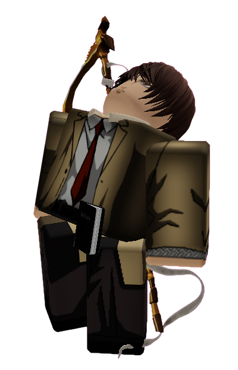

◆ ARCHIVE — SPECIAL OBSERVATION ◆
LIGHT YAGAMI
Status: SAFE
Archive Classification: SPECIAL OBSERVATION
Threat Level: UNKNOWN
THIS CONTESTANT SHOULD NOT BE UNDERESTIMATED
Quote
"I'll create a perfect world."
Short Bio
Light Yagami is one of the newest members of the Exit Team.
Unlike Joker, who searches for the truth, Light believes the island needs someone willing to make difficult decisions.
Calm, intelligent, and impossible to read, Light has quickly become one of the most unpredictable contestants in Anime Showdown Ultimax.
Some believe he'll save everyone.
Others believe he'll become exactly like the Host.
How They Arrived
Before ASU
Light had finally achieved complete control over his world.
Everything was going according to plan.
Then... the Death Note vanished.
His surroundings became completely silent. The city faded away.
When Light opened his eyes again, he was standing on an unfamiliar island surrounded by strangers.
Arrival
Unlike most contestants, Light wasn't interested in returning home.
He wanted answers.
Who brought him here? Why?
And most importantly... could whoever created this world be defeated?
Personality
Light is calm, calculating, and incredibly intelligent.
He rarely acts without thinking several steps ahead.
While many contestants wear their emotions openly, Light hides almost everything behind a polite smile.
Even his allies aren't always sure what he's thinking.
Current Story
Following the disappearance of Law, Joker invited Light to join the Exit Team.
Although the team welcomed him, nobody fully trusts him.
Light claims he wants to destroy the Host.
Whether that's actually his goal... only Light knows.
Relationships
Allies
- Joker — The leader of the Exit Team. Joker believes Light's intelligence makes him valuable. He also knows keeping an eye on Light is necessary.
- David Martinez — David tries to see the good in Light. Light finds David's optimism... useful.
- Gyro Zeppeli — Gyro wants to believe Light can be trusted. Light respects Gyro more than he lets on.
Rivals
- Adam Smasher — Light immediately recognized Adam as someone hiding information.
Enemies
- The Host — Light refuses to believe anyone should possess absolute control. Not even the Host.
Threat Assessment
Archive Classification:
EXIT TEAM MEMBER
Lore
Following Law's disappearance, the Exit Team needed someone capable of helping Joker solve the island's mysteries.
Light volunteered.
Recovered Archive notes suggest the Host originally planned to keep Light out of the competition entirely.
The reason remains unknown.
One deleted Archive message simply reads:
"He thinks like me."
The message was deleted less than one second after it appeared.
Additional Notes
- Replaced Law as an Exit Team member.
- Has already attempted to study the Archive itself.
- Frequently asks questions nobody else thinks to ask.
- One of the few contestants capable of matching Joker's intelligence.
- The Host has personally increased surveillance around Light.
- Nobody knows whether Light truly wants to save everyone... or simply win.
A new god is no different from the old one.